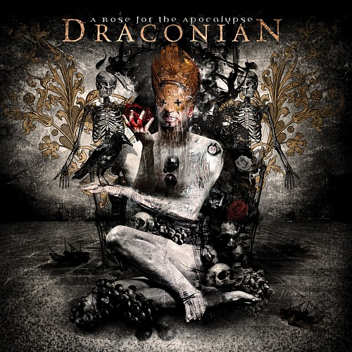

2011 was a year with quite a few album releases, so I asked myself recently which one I like most. The descision is not easy since I grabbed CDs from different metal genres, but let’s see…
The contenders
My first task was to get a list of the albums I bought in 2011. Fingers crossed that I did not miss a disc.
- Before the Dawn - Blackstar Rising
- Draconian - A Rose For The Apocalypse
- Evergrey - Glorious Collision
- Ljungblut - Over skyene skinner alltid solen
- Nightwish - Imaginaerum
- Symphony X - Iconoclast
My Voting

- Draconian - A Rose For The Apocalypse
- Ljungblut - Over skyene skinner alltid solen
- Nightwish - Imaginaerum
- Symphony X - Iconoclast
- Before the Dawn - Blackstar Rising
- Evergrey - Glorious Collision
My Voting - Explained
Upfront, all the albums listed there are good ones — otherwise I would not have bought them. This is just a listing based on how often I listened to the album and if it had worn off or not.
My winner for 2011 clearly is the new Draconian album A Rose For The Apocalypse. Although I miss the duelling female/male vocals from earlier releases, they showed how to create a Goth/Doom masterpiece with an ongonig theme throughout the whole album. There are catchy riffs, great clean voice parts and shivering screams. Everytime I give this one a spin it’s a new adventure! It’s really sad that Lisa decided to quit the band just after the album release.
Running up: Ljunglut with Over skyene skinner alltid solen. This is the third solo release of Kim Ljung, bassist of Zeromancer & Seigmen. The whole album has Norwegian lyrics and tries to cross the gap between Synth, Rock and Industrial. The reason for why I really like this disc is its diversity — within the album and also in contrast to my usual Metal preferences.
The third place takes Imaginaerum — the new Nightwish opus. The album leverages cinematic themes but offers quite varying songs. Compared to the predecessor Dark Passion Play Anette’s vocals fit better and the songs are arranged to match her and not Tarja.
Other albums?
Of course there are other great albums, but there is a limit on budget, isn’t it? The only album that is still on my to-buy-list, is the new Ghost Brigade Until Fear No Longer Defines Us. They have offered a free stream for one week, and I really liked it. So maybe it would range somewhere between Ljunblut and Symphony X.

2012?
2012 offers some promising releases as well: Swallow the Sun, Megaherz, Voices of Destiny, Eisbrecher, Tremonti, … With Voices of Destiny and Megaherz already being in my 2012 collection. This will give a hard descision as well!